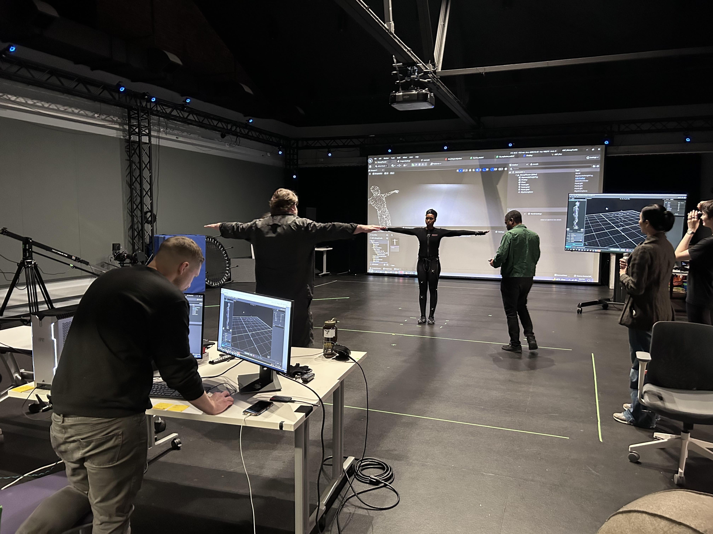

Haboob
Overview
Haboob is a VR film which tells the story of a Sudanese girl’s experience of a haboob, or sandstorm, in Khartoum which leaves a profound and lingering memory.
Role
Developer & Designer
Sand is the material that matters most to what it means for us to be human — socially, culturally, technologically, politically. It is plentiful, and yet our demand for it and extraction methods are creating irreversible damage. Sand geographies, from beaches and deserts, to ocean floors and sandstorm tracks, shape how we live in and engage our environments. Sand provides material with which we can — almost — grasp and start to make sense of what it means to be human during this time of ecological crisis. Examining our relationships with sand can, perhaps, guide us to a more just, equitable and environmentally conscious future.
Haboob is a re-telling of the earliest body-memory of sand from the author, Nehal El-Hadi.
This work-in-progress experiment is the first iteration of a VR experience that combines haptic interactions with sand with virtual experiences of the haboob, or sandstorm. Created in partnership with New York Live Arts. Text by Nehal El-Hadi, and originally commissioned by New York Live Arts.
Created with Unity, Haboob is a VR film which immerses the viewer within a city in Khartoum, just before a Haboob sweeps in. Enhanced with spatial audio, the viewer finds themselves surrounded by sand, and in the company of a djinn, created with the use of motion-capture. Kendra Ross, using their incredible grace embodied the djinn.
This project uses Unity's skinned mesh and VFX Graph to create the incredible characters in the scene. The soundtrack, created by tUkU provides a moving score to the experience.

Motion capture at NYU

Work in progress
Experimenting with different art styles
Early motion capture + VFX Graph tests